Overview
Poppion is a Unity-based interactive prototype exploring how decision-making, waiting, and uncertainty can generate emotional engagement within a narrative-supported experience.
Rather than relying on narrative alone, the project uses interaction mechanics as the primary emotional driver. Players experience academic pressure, job application waiting, hidden outcomes, repeated checking, and unclear consequences through the structure of play.
Research Focus
The project investigates how delayed feedback, hidden rules, repeated choices, and suspended outcomes influence emotional engagement.
It is grounded in young adult experiences such as academic pressure and job searching, where action does not guarantee clear results.
Flow & Storyboard
Practical Development
The prototype was developed in Unity, with assets created in Procreate and animated in After Effects.
Interaction design evolved from simple button input to more embodied actions including keyboard tapping, swiping, scrolling, and repeated checking behaviour.
Practical Development
Unity Implementation
The prototype was built in Unity using scene-based interaction and hidden variables.
Visual Asset Creation
Interface elements and visual assets were created in Procreate to maintain a consistent style.
Animation & Motion
Animations were produced in After Effects and integrated into Unity to enhance pacing and feedback.
Chapter One – Academic Pressure
A repeated decision loop where players choose between study, rest, and social actions without visible progress or feedback.
Hidden variables, overwork states, and delayed outcomes create tension and uncertainty.
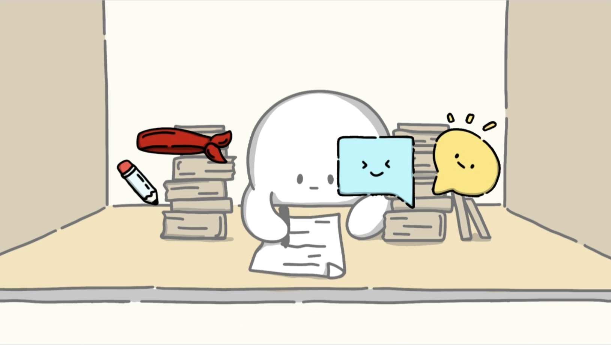
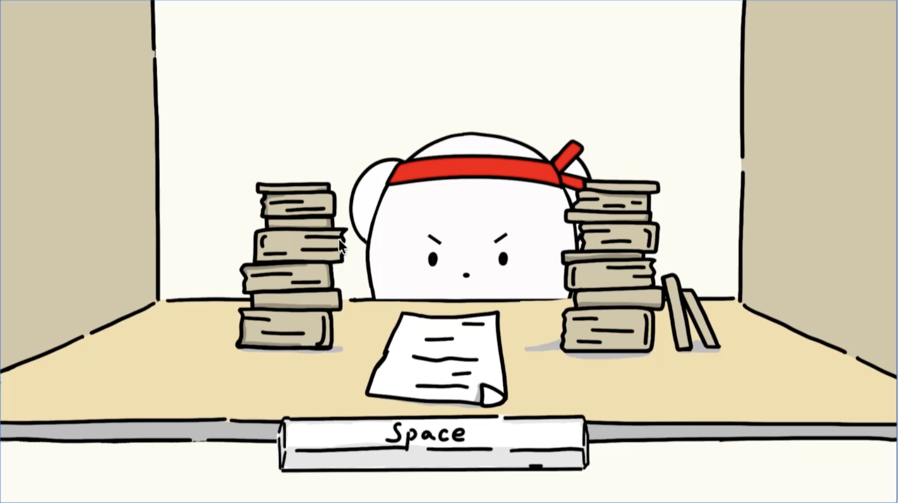
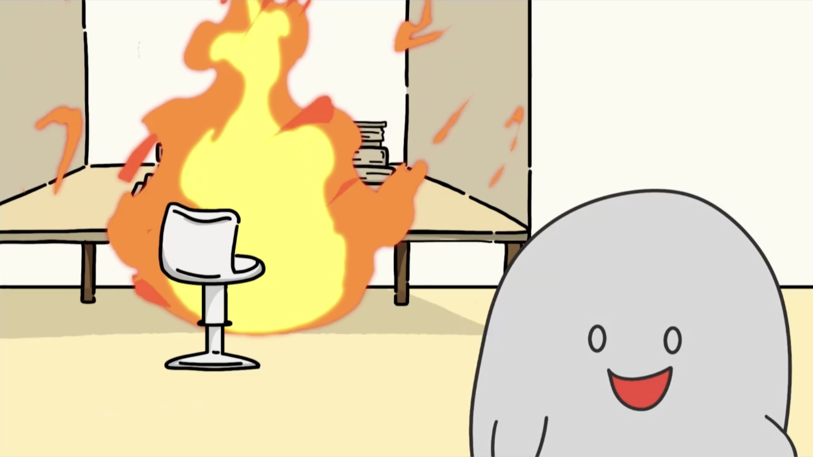
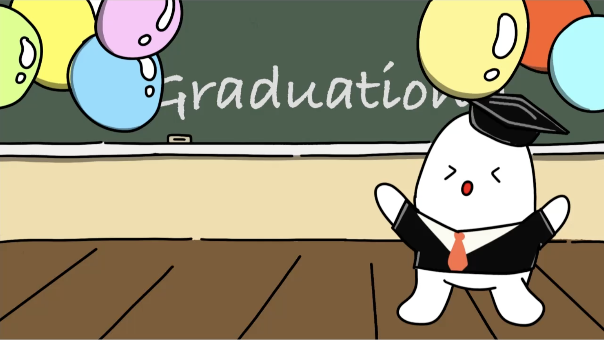
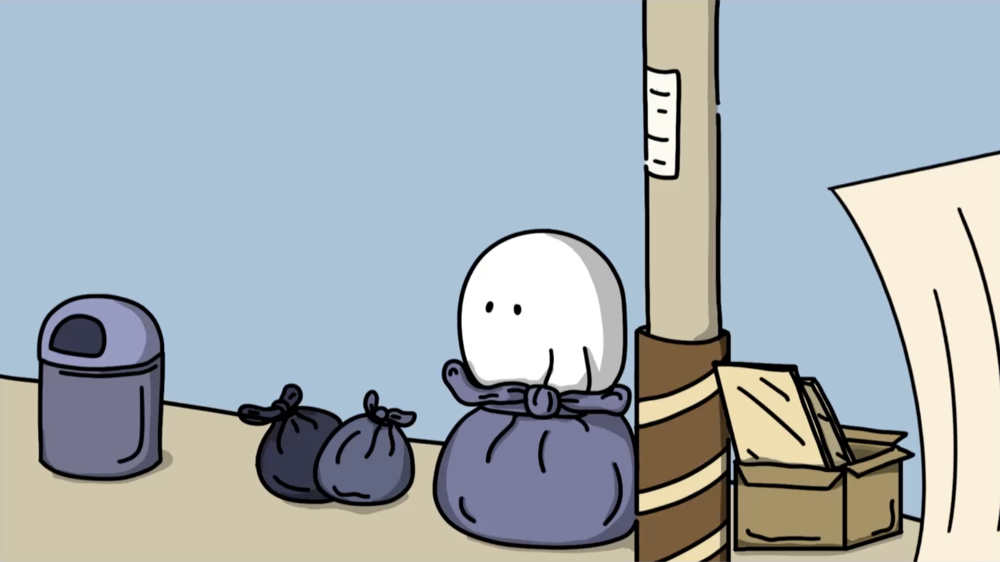
Chapter Two – Waiting & Uncertainty
Players scroll social media, submit a job application, and repeatedly check email without receiving a final response.
Familiar interfaces create emotional experiences of waiting, comparison, and uncertainty.
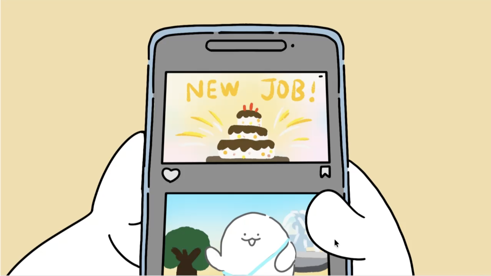
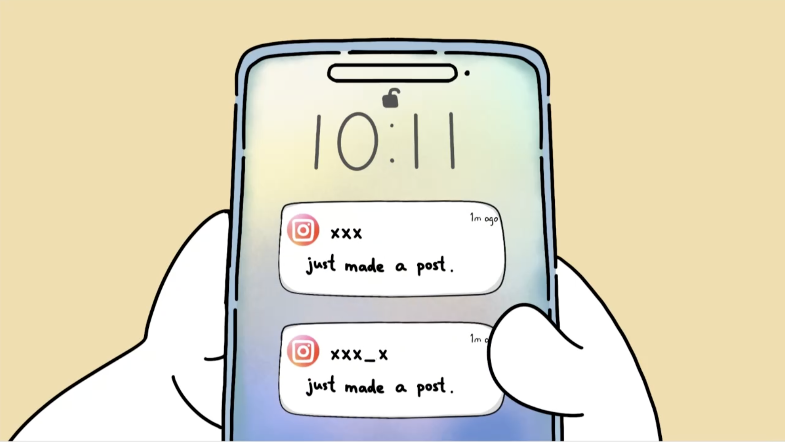
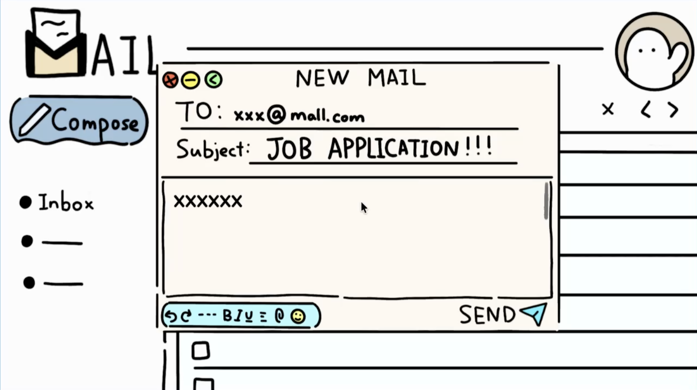
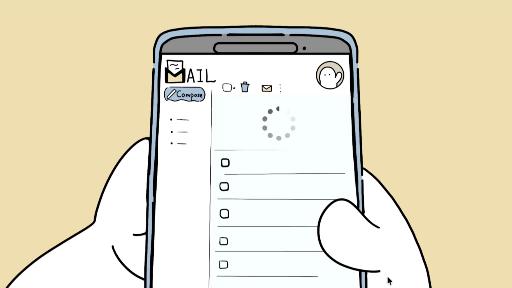
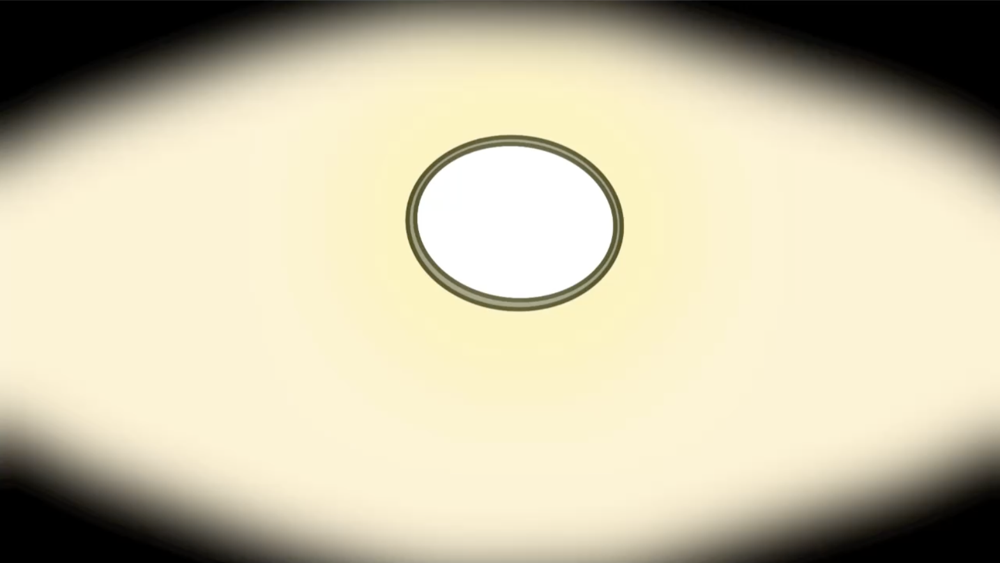
User Testing & Iteration
The design was refined through user testing and observation. Players often questioned whether the system was functioning correctly during the waiting phase.
To address this, the “No New Emails” feedback was introduced. This small change clarified that the system was working as intended, while still preserving the feeling of uncertainty and lack of control.
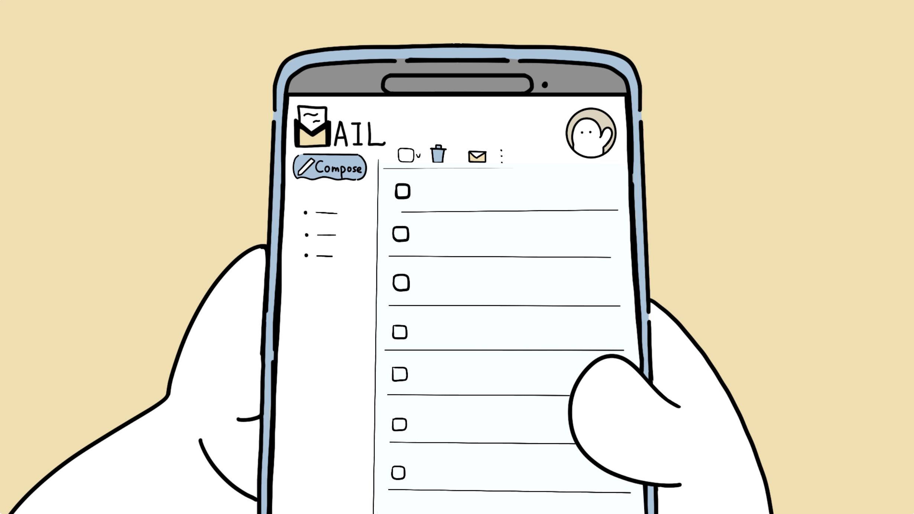
Final Video
Reflection
This project demonstrates how interaction mechanics can function as emotional drivers, especially when grounded in familiar real-life experiences.
It strengthened my skills in Unity, interaction design, animation, and research-led design.